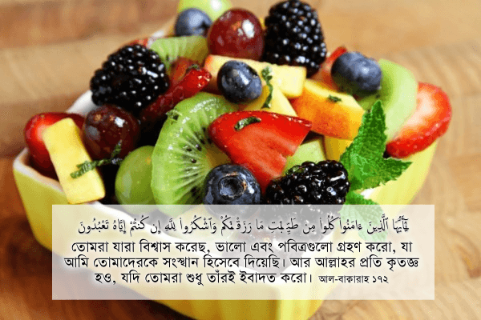

সুরা আল-বাক্বারাহতে আল্লাহ تعالى আমাদেরকে তৃতীয় বারের মতো ভালো এবং পবিত্র খাবার খাওয়ার নির্দেশ দিলেন—
{kind=link}
তোমরা যারা বিশ্বাস করেছ, ভালো এবং পবিত্রগুলো গ্রহণ করো, যা আমি তোমাদেরকে সংস্থান হিসেবে দিয়েছি। আর আল্লাহর প্রতি কৃতজ্ঞ হও, যদি তোমরা শুধু তাঁরই ইবাদত করো। [আল-বাক্বারাহ ১৭২]
এর আগে ৫৭তম এবং ১৬৮তম আয়াতেও তিনি আমাদেরকে বলেছেন হালাল এবং তাইয়িব (ভালো এবং পবিত্র) খাবার খেতে। একই সুরায় তিন তিনবার আমাদেরকে মনে করিয়ে দেওয়া থেকে সহজেই বোঝা যায়, ভালো এবং পবিত্র খাবার খাওয়াটা আল্লাহর تعالى কাছে কত গুরুত্ব রাখে। কুর’আনে কোনো কিছু তিনি একবার আদেশ করলেই যথেষ্ট। যেমন তিনি কুর’আনে মাত্র একবার আদেশ করেছেন রোজা রাখতে। মুসলিমদের মধ্যে রোজা রাখতে আগ্রহের কোনো কমতি নেই। যেই বান্দা বছরে কোনো দিন নামাজ পড়ে না, সেও রমজানে ৩০ দিন রোজা রাখে। অথচ কুর’আনে কমপক্ষে তিনবার ভালো, এবং পবিত্র খাবার খেতে বলার পরেও অনেক মুসলিমই সেই নির্দেশ প্রতিনিয়ত ভেঙ্গে যায়। আল্লাহ تعالى জানেন কোন ব্যাপারগুলোতে আমরা সাবধান হবো না। সেই ব্যাপারগুলো একারণেই তিনি বার বার মনে করিয়ে দেন।
যেমন: আল্লাহ تعالى আমাদেরকে প্রকৃতিতে হাজার রকমের পানীয় দিয়েছেন—ডাবের পানি, তালের রস, আখের রস; আপেল-কমলা-আঙ্গুরসহ শত ফলের জুস; গ্রিন-টি, হারবাল-টিসহ শত ধরণের স্বাদের চা, কফি—কিন্তু তারপরেও ক্ষতিকর সফট ড্রিঙ্কস, ফ্রুটজুস, বিয়ার, হুইস্কি পান করার জন্য আমাদের অন্তর খাঁ খাঁ করতে থাকে। প্রকৃতিতে কয়েক হাজার রকমের স্বাস্থ্যকর, সুস্বাদু পানীয় পেয়েও আমাদের মন ভরে না। প্রকৃতিতে পাওয়া স্বাস্থ্যকর ফলগুলোকে বিকৃত করে, গাঁজিয়ে, বেশি করে চিনি এবং কেমিক্যাল দিয়ে বিষাক্ত কক্টেইল বানিয়ে, তারপর রঙ মিশিয়ে রঙ্গিন করে পান করে আমাদের মন ভরাতে হয়।
আল্লাহ تعالى আমাদেরকে প্রকৃতিতে হাজারো স্বাস্থ্যকর শস্য, যেমন আলু, গম, চাল দিয়েছেন। আমরা সেগুলোকে রুটি, ভাত, খিচুড়ি, পোলাও বানিয়ে খেতে পারি। একইসাথে দিয়েছেন হাঁসমুরগি, গরু, ছাগল, হরিণ সহ শত শত প্রাণী, যা আমরা নানা ভাবে স্বাস্থ্য সম্মত উপায়ে রান্না করে খেতে পারি। কিন্তু না, আমাদের দরকার তিন দিনের বাসি তেলে ভাজা, ফ্যাট ভর্তি ফ্রেঞ্চ ফ্রাই, পুড়িয়ে শেষ করে ফেলা তেলতেলে চিকেন ব্রোস্ট, গলগলে পনিরভর্তি পিঁৎজা — যেগুলো খেয়ে আমাদের পেটের মধ্যে থলথলে চর্বি জমে, লিভার নষ্ট হয়ে যায়, রক্ত চাপ বেড়ে যায়। তারপর অসুস্থ হয়ে বিছানায় শুয়ে বছরের পর বছর কোঁকাতে হয়। নিকৃষ্ট জিনিসের প্রতি কেন জানি আমাদের আজন্ম আগ্রহ। বনী ইসরাইলিদের বদঅভ্যাস হাজার বছর পরেও আমাদের মধ্যে থেকে যাচ্ছে না।
আমাদেরকে মনে রাখতে হবে যে, আল্লাহ تعالىআমাদেরকে শুধু হালাল খাবার খেতেই বলেননি, একইসাথে সেটা তাইয়িবও হতে হবে। তাইয়িব طيب হচ্ছে যা ভালো এবং পবিত্র— দুটোই একসাথে।[১] যা কিছুই খেতে ভালো, দেখতে সুন্দর, শ্রুতিমধুর, সুন্দর ঘ্রাণ —সেগুলোই তাইয়িব।[১৬]
আল্লাহ تعالى আমাদেরকে যা দেন, সেটা আমাদের জন্য ভালো এবং পবিত্র। কিন্তু মানুষ অনেক সময় অনেক কিছু তৈরি করে যেটা খেতে ভালো হলেও, পবিত্র নয়। যেমন, আল্লাহ تعالى কলা দিয়েছেন, যা তাইয়িব— ভালো এবং পবিত্র। কিন্তু মানুষ যখন এই কলাকে পোকা মারার বিষ ডিডিটি এবং বিদেশ থেকে আনা কেমিক্যাল দিয়ে পাকিয়ে বিক্রি করে[৩১১], তখন সেটা খাওয়ার যোগ্য হলেও, সেটা আর পবিত্র থাকে না, তাইয়িব-এর দুটি শর্ত পূরণ করে না। সুতরাং, এই ধরনের কলা, ফরমালিন দিয়ে রাখা ফল, মাছ খাওয়ার ঝুঁকি নেওয়া যাবে না, কুর’আনের এই আয়াতের নিষেধের জন্য এবং নিজের স্বাস্থ্যের জন্য।
একইভাবে আল্লাহ تعالى প্রকৃতিতে পানি, চিনি দিয়েছেন। সেগুলো হালাল এবং তাইয়িব। কিন্তু এগুলোর সাথে ক্ষতিকারক রাসায়নিক পদার্থ, এসিড, মাত্রাতিরিক্ত পরিমাণের চিনি, রঙ ব্যবহার করে যখন নানাধরণের পানীয় তৈরি করে, তখন সেটা আর তাইয়িব থাকে না।
ব্যবসায়ী ফার্মগুলোর জঘন্য পরিবেশে গাদাগাদি করে থাকা অসুস্থ হাঁসমুরগি, গরুছাগল, যেগুলোর সাথে চরম দুর্ব্যবহার করা হয়, এন্টিবায়োটিক এবং হরমোন ইনজেকশন দিয়ে মোটা থলথলে বানানো হয় – সেগুলোও খাওয়া থেকে দূরে থাকতে হবে, কারণ সেগুলো তাইয়িব থাকে না। এমনকি মুসলিম বিজ্ঞানীরা বলছেন যে, এগুলো হালাল থাকারও সম্ভাবনা কম, কারণ হালাল হতে হলে প্রাণীদের উপর এধরনের অন্যায় করা যাবে না, প্রকৃতির স্বাভাবিক নিয়ম এভাবে ভাঙ্গা যাবে না।[৩০৫] এই ধরনের অপবিত্র খাবার খেলে আমরা কু’রআনের এই কঠিন নির্দেশটির অবাধ্য হবো। কু’রআনে আল্লাহ تعالى আমাদেরকে শুধু হালাল খাবার খেতেই বলেননি, তিনি সমগ্র মানবজাতিকে: মুসলিম-অমুসলিম উভয়কেই তাইয়িব (ভালো এবং পবিত্র) খাবার খেতে বলেছেন।
আমাদের ভেতরে খাবার হালাল হলো কি না, সেটা নিয়ে যতটা সতর্কতা দেখা যায়, খাবার তাইয়িব কি না, সেটা নিয়ে ততটা সতর্কতা দেখা যায় না। অথচ আল্লাহ تعالى কু’রআনে সূরা বাকারাহ’তেই তিন বার মানুষকে হালাল এবং তাইয়িব খাবার খেতে বলেছেন। যদি হালাল খাবার খেলেই হতো, তাহলে তিনি বিশেষ করে তাইয়িব কথাটা বার বার বলতেন না।
ভালো এবং পবিত্রগুলো গ্রহণ করো, যা আমি তোমাদেরকে সংস্থান হিসেবে দিয়েছি
আরবিতে কুলু كُلُوا۟ শব্দটির অর্থ শুধুই খাওয়া নয়, একইসাথে এটি কোনো কিছু গ্রহণ করাও বোঝায়। যেমন; বেতনের টাকা গ্রহণ করা, প্রকৃতি থেকে কিছু গ্রহণ করা, সম্পত্তি, উপহার গ্রহণ করা ইত্যাদি। আল্লাহ تعالى যা কিছুই আমাদেরকে রিজক হিসেবে দিয়েছেন, সেটা গ্রহণ করা এখানে كُلُوا۟ নির্দেশের মধ্যে পড়ে।[১১]
আর রিজক رزق হচ্ছে মানুষের বেড়ে ওঠার জন্য যা কিছু দেওয়া হয়েছে: আলো, পানি, বাতাস, খাবার, উপার্জন, প্রতিভা —সবকিছুই রিজক এর মধ্যে পড়ে।[১][১৬]
সুতরাং আল্লাহ تعالى আমাদেরকে শুধুই তাইয়িব খাবার খেতে বলছেন না, একইসাথে বলছেন যে, আমাদের রিজক গ্রহণগুলোও তাইয়িব হতে হবে। আমাদের উপার্জনের পদ্ধতি ভালো এবং পবিত্র হতে হবে। ২৫-৩০ বছর পড়াশুনা করে বেড়িয়ে চাকরি/ব্যবসা পেয়ে মানুষের সাথে প্রতারণা করে উপার্জন করলে হবে না। আমাদের প্রকৃতি থেকে শস্য, প্রাণী আহরণ ভালো এবং পবিত্র পদ্ধতিতে হতে হবে। স্বার্থপরের মতো বন উজাড় করলে হবে না। প্রাণীগুলোকে অসুস্থকর পরিবেশে অমানবিকভাবে বড় করে নির্মমভাবে মেরে মাংস বিক্রি করলে হবে না। মাটিতে ক্ষতিকারক কীটনাশক দিয়ে প্রতিবেশির পুকুর-ডোবা-নালার পানি বিষাক্ত করে ফেললে হবে না। মুনাফার লোভে গাছে ক্ষতিকারক পোকানাশক ওষুধ দিয়ে ফলগুলোকে বিষাক্ত করে বিক্রি করলে হবে না। এই সব যত ধরনের স্বার্থপর, অসাধু পদ্ধতিতে রিজক গ্রহণ করা হচ্ছে, সেগুলো তাইয়িব নয়। এগুলো আমাদের জন্য নিষিদ্ধ।
মুসলিমদেরকে কঠিনভাবে বলা হয়েছে এমন কিছু গ্রহণ না করতে, সেটা খাবার হোক বা উপার্জন, যা ভালো এবং পবিত্র নয়, যা মানুষের শারিরিক এবং মানসিক ক্ষতি করে। এগুলো থেকে আমাদের দূরে থাকতে হবে, যদি আমরা নিজেদেরকে বিশ্বাসী বলে সত্যিই দাবি করি। প্রথমত, আমাদেরকে লোভ সামলাতে হবে, যেন আমরা দুনিয়ার হাজারো অসুস্থ, অরুচিকর, নিষিদ্ধ প্রলোভন থেকে নিজেদেরকে দূরে রাখি, নিজেদের দেহ এবং মনকে কলুষিত না করি। দ্বিতীয়ত, আমাদেরকে সবসময় চেষ্টা করতে হবে: আমরা যেসব খাবার এবং পানীয় গ্রহণ করছি, সেগুলো তাইয়িব হচ্ছে কিনা। “সবাই খাচ্ছে, তাই আমিও খাই?” —এই ধরনের অজুহাত দিলে হবে না। একজন মু’মিন কখনো “সবাই করে, তাই আমিও করি” —এই অজুহাত দেয় না। একজন মু’মিনের বৈশিষ্ট্য হচ্ছে: সবাই যা করে, সেটা নিজে ভালো করে চিন্তা-ভাবনা করে, যাচাই বাছাই করে দেখা যে, সেটা একজন মু’মিন হিসেবে আমার আর করা যাবে কিনা। মু’মিনের কাজই হচ্ছে গড্ডালিকা প্রবাহে গা না ভাসিয়ে সাবধানে বিবেক-বুদ্ধি খাঁটিয়ে, সবসময় আল্লাহর تعالى প্রতি সাবধান থেকে প্রতিটি কাজ করা।
আর আল্লাহর প্রতি কৃতজ্ঞ হও, যদি তোমরা শুধু তাঁরই ইবাদত করো
আয়াতের এই অংশটি কঠিন বাণী। যদি আমরা দাবি করি যে, আমরা শুধু আল্লাহর تعالى ইবাদত করি, তাহলে আমাদেরকে তাঁর প্রতি কৃতজ্ঞ হতে হবে। যদি আমরা কৃতজ্ঞ না হই, তাহলে আমরা আসলে শুধুই আল্লাহর تعالى ইবাদত করছি না। আমাদের ইবাদতে খাঁদ রয়েছে।
আমাদেরকে মনে রাখতে হবে যে, আমাদের জীবনে আমরা যা কিছুই উপভোগ করছি, সেটা মায়ের হাতের রান্না, স্ত্রীর সাজানো সংসার, ছেলেমেয়েদের অর্জন, চাকরির বেতন, ব্যবসায়ের লাভ, নিজেরদের প্রতিভা —এই সবকিছুই আসলে এসেছে আল্লাহর تعالى কাছ থেকে। সব রিজিক তিনিই আমাদের দেন।
আমার মা যখন আমাকে আদর করে পিঠা বানিয়ে খাওয়ান, সেটা হয় আল্লাহর تعالى ইচ্ছায়। আল্লাহ تعالى আমাকে আদর করে পিঠা খাওয়াতে চেয়েছেন দেখেই তিনি আমাকে পিঠা খাওয়ার জন্য একজন জীবিত, সক্ষম মা, পিঠার সরঞ্জাম কেনার অর্থ, সব ব্যবস্থা করে দিয়েছেন। আমার মা আল্লাহর تعالى আদরের নির্দেশ কার্যকর করার একটি বাহন মাত্র। আমরা আমাদের মায়ের প্রতি অবশ্যই কৃতজ্ঞতা দেখাবো, কারণ মানুষকে কৃতজ্ঞতা না দেখালে আল্লাহকেও تعالى কৃতজ্ঞতা দেখানো হয় না।[৩১২] তবে বিশেষভাবে কৃতজ্ঞ হবো আল্লাহর تعالى প্রতি। একইভাবে আমাদের চারপাশে পরিবার, আত্মীয়, বন্ধুবান্ধব রয়েছে, যারা আমার প্রতি আল্লাহর تعالى ভালোবাসা, যত্ন, আদর বাস্তবায়ন করার জন্য কাজ করে যাচ্ছেন, তাদের প্রতিও কৃতজ্ঞতা দেখাবো। সে সাথে সবসময় মনে রাখবো: সবচেয়ে বেশি কৃতজ্ঞতা পাওয়ার অধিকার হচ্ছে আল্লাহর تعالى।
একইসাথে স্বামী যখন দিনরাত কাজ করে সংসারের জন্য উপার্জন করে, বাইরের হাজারো সমস্যা থেকে পরিবারকে আগলে রাখে, সেটা হয় আল্লাহর تعالى ইচ্ছায়। আল্লাহই تعالى আমাকে মাথার উপরে ছাদ, কলে পানি, চুলার আগুন, টিভি, ফ্রিজ, মোবাইল ফোন উপভোগ করতে দিয়েছেন। স্বামী হচ্ছে তাঁর আদেশ বাস্তবায়ন করার জন্য একটি বাহন মাত্র। স্ত্রী যখন সংসার গুছিয়ে সন্তান্দের লালন পালন করে প্রতিদিন নিষ্ঠার সাথে স্বামীর যত্ন নেয়, সেটা আসলে আল্লাহই تعالى যত্ন নেন। স্ত্রী আল্লাহর تعالى যত্ন বাস্তবায়ন করার জন্য একটি বাহন। তাই স্বামী-স্ত্রী একে অপরের প্রতি যেমন সবসময় কৃতজ্ঞতা দেখাবে, তার থেকেও বেশি কৃতজ্ঞতা দেখাবে আল্লাহর تعالى প্রতি। মানুষের প্রতি কৃতজ্ঞতা দেখানো হচ্ছে আল্লাহর প্রতি কৃতজ্ঞতা দেখানোর প্রথম ধাপ। এরপর আলাদাভাবে আল্লাহর تعالى প্রতি কৃতজ্ঞতা দেখিয়ে, তাঁর প্রতি ইবাদত সম্পূর্ণ করতে হয়।
সূত্র:
- [১] নওমান আলি খানের সূরা আল-বাকারাহ এর উপর লেকচার এবং বাইয়িনাহ এর কু’রআনের তাফসীর।
- [২] ম্যাসেজ অফ দা কু’রআন — মুহাম্মাদ আসাদ।
- [৩] তাফহিমুল কু’রআন — মাওলানা মাওদুদি।
- [৪] মা’রিফুল কু’রআন — মুফতি শাফি উসমানী।
- [৫] মুহাম্মাদ মোহার আলি — A Word for Word Meaning of The Quran
- [৬] সৈয়দ কুতব — In the Shade of the Quran
- [৭] তাদাব্বুরে কু’রআন – আমিন আহসান ইসলাহি।
- [৮] তাফসিরে তাওযীহুল কু’রআন — মুফতি তাক্বি উসমানী।
- [৯] বায়ান আল কু’রআন — ড: ইসরার আহমেদ।
- [১০] তাফসীর উল কু’রআন — মাওলানা আব্দুল মাজিদ দারিয়াবাদি
- [১১] কু’রআন তাফসীর — আব্দুর রাহিম আস-সারানবি
- [১২] আত-তাবারি-এর তাফসীরের অনুবাদ।
- [১৩] তাফসির ইবন আব্বাস।
- [১৪] তাফসির আল কুরতুবি।
- [১৫] তাফসির আল জালালাইন।
- [১৬] লুঘাতুল কুরআন — গুলাম আহমেদ পারভেজ।
- [৩০৫] হালাল মাংস কি আসলেই হালাল? http://www.onislam.net/english/health-and-science/health/422325-halal-organic-or-vegetarian.html
- [৩১১] কলা পাকানো হয় পোকা মারার বিষ দিয়ে — http://www.webcitation.org/6L4q7dv8i, http://www.webcitation.org/6KmuanBN9
- [৩১২] মানুষকে কৃতজ্ঞতা না দেখালে আল্লাহকে কৃতজ্ঞতা দেখানো হয় না — http://www.sunnah.com/abudawud/43/39, http://www.sunnah.com/tirmidhi/27/60